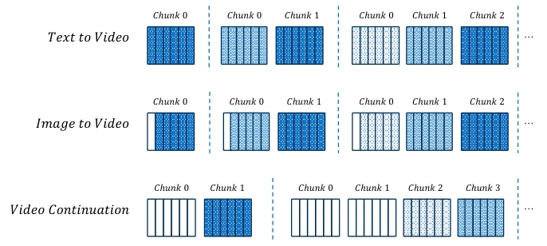
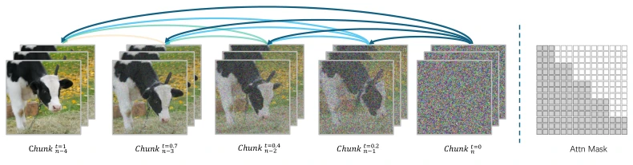
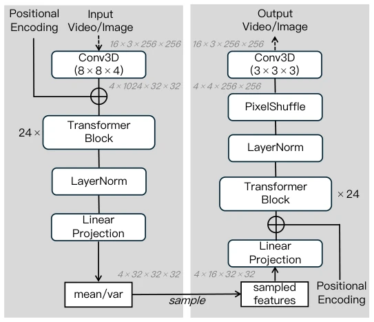
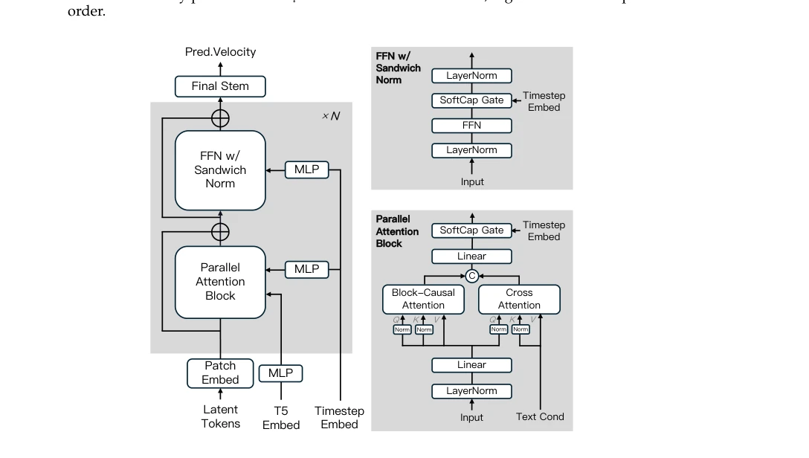
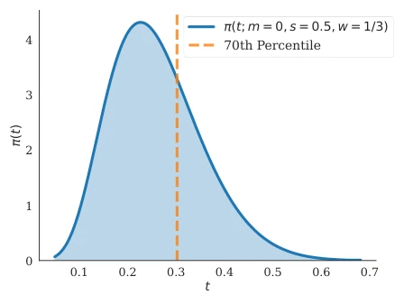
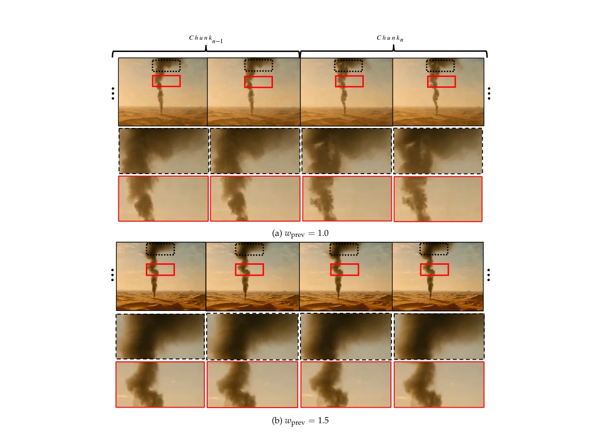
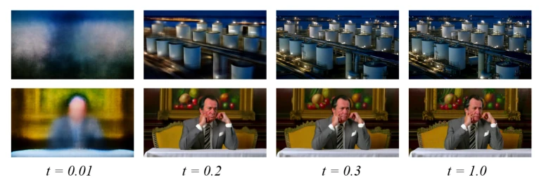
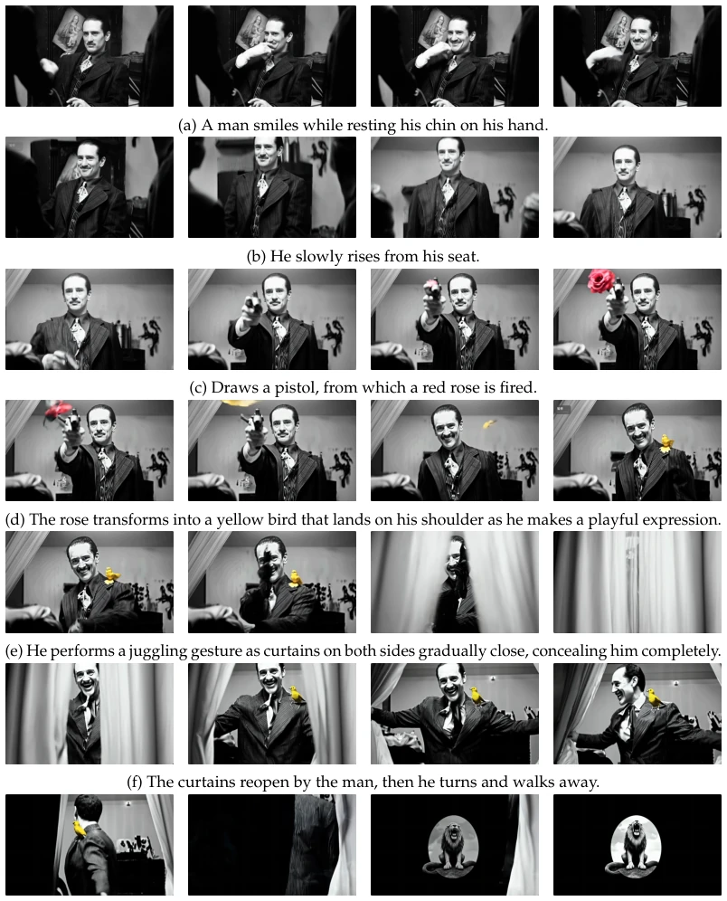
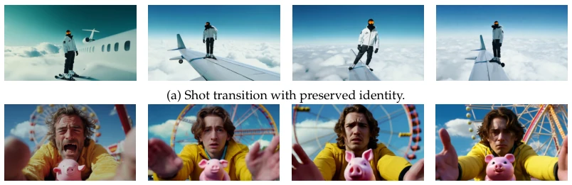
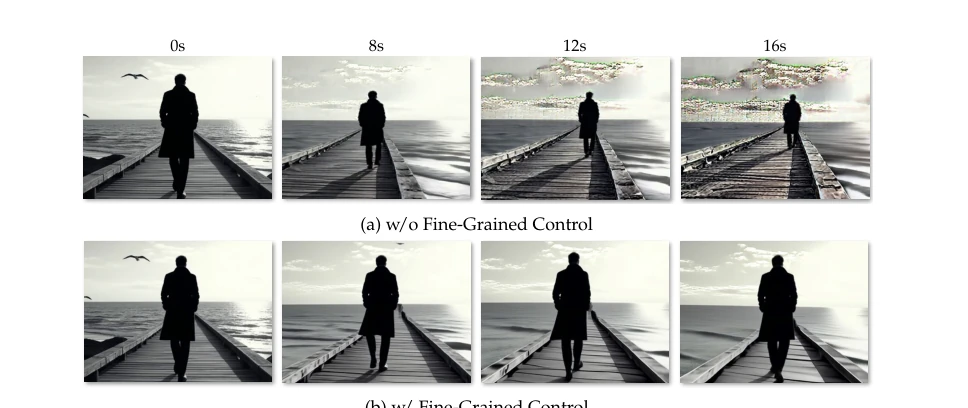

MAGI-1 attempts to reshape video generation using an autoregressive (Autoregressive) architecture. The 24B parameters indeed demonstrate scale effects, supporting 4 million token context. Its claimed "streaming generation" and "causal modeling" are very attractive for embodied intelligence, after all, robots cannot wait for the entire video to finish generating before moving. However, the word "real-time" appears slightly awkward in front of the 24B model, inference costs remain high, and it is questionable whether the distilled model retained all details. Transformer VAE accelerating decoding is a highlight, but memory usage is not necessarily low. Physical consistency improvement is obvious, suitable for simulation, but it is questionable whether the distilled model retained all details. Overall, this is a "heavy tank" in the field of video generation, suitable for offline or high-compute scenarios, rather than mobile terminals. Although its block strategy is good, the connection between blocks still requires manual parameter tuning, and the degree of automation needs improvement.
研究动机Motivation
现有扩散模型（如 Sora (OpenAI, 2024)）多采用全局双向去噪，处理整个时间序列，忽略了时间数据的因果结构。这种设计导致它们难以支持流式交互或自回归生成，对于需要实时决策的具身智能（Embodied AI）而言是致命短板。此外，现有模型通常针对特定任务（如文生视频）微调，缺乏统一框架，导致部署复杂。MAGI-1 旨在解决这些痛点，通过分块自回归实现因果建模，支持流式生成，并统一文生视频、图生视频和视频续写任务，减少任务特定微调的需求，提升在物理常识和时序一致性上的表现。这对于需要长期记忆和因果推理的机器人系统至关重要，避免了传统扩散模型在长序列生成中的累积误差问题，为具身智能提供了更可靠的世界模型基础。
Existing diffusion models (such as Sora (OpenAI, 2024)) mostly adopt global bidirectional denoising, processing the entire time series, ignoring the causal structure of time data. This design leads to difficulties in supporting streaming interaction or autoregressive generation, which is a fatal shortcoming for embodied AI (Embodied AI) requiring real-time decision-making. In addition, existing models are usually fine-tuned for specific tasks (such as text-to-video), lacking a unified framework, leading to complex deployment. MAGI-1 aims to solve these pain points, achieving causal modeling through block autoregression, supporting streaming generation, and unifying text-to-video, image-to-video, and video continuation tasks, reducing the need for task-specific fine-tuning, and improving performance on physical common sense and temporal consistency. This is crucial for robot systems requiring long-term memory and causal reasoning, avoiding the cumulative error problem in long sequence generation of traditional diffusion models, and providing a more reliable world model foundation for embodied intelligence.

Figure 4: The figure shows how different tasks can be unified by varying the proportion of clean chunks. Each vertical bar represents a latent frame in a chunk, with darker bars indicating higher noise levels and the white bars denoting clean frames. The first row illustrates the early inference stage of T2V generation, starting from a single fully noisy chunk and progressing to multiple noisy chunks, before any clean chunk has been produced. The middle row depicts the case of I2V generation, treated as a special case of continuation in which only the first frame of the first chunk is clean. The last row describes a general stage where clean chunks are already available, applicable to video continuation and other scenarios involving prior denoised content.
The overall process is divided into three stages: VAE compression, autoregressive denoising, and distillation. First, a Transformer-based VAE is adopted to replace traditional CNNs, utilizing 3D convolution embeddings and 24-layer Transformer blocks to achieve faster decoding speed, although the parameter count is large. Second, the core denoising model is based on the DiT architecture, introducing Block-Causal Attention to ensure inter-block causality, with full attention within blocks. The training objective adopts Flow-matching, noise time steps monotonically increase, supporting autoregression. To improve efficiency, Parallel Attention Block is used to reduce communication overhead, and GQA and QK-Norm are applied to stabilize training. In the inference stage, KV Cache supports long videos, and dynamic adjustment of KV range achieves camera switching. In addition, Shortcut Model is adopted for distillation to reduce inference steps, combined with Prompt Enhancement strategy to optimize text control. These designs jointly guarantee the model's stability and efficiency under large-scale context, making long video generation possible.

Figure 1: (Left) MAGI-1 performs chunk-wise autoregressive denoising. The video is generated in chunks of 24 frames, where each chunk attends to all previously denoised chunks. Once a chunk reaches a certain denoising level, the next chunk begins generation. (Right) A block-causal attention mask enforces temporal causality across chunks, enabling pipelined and parallel generation.

Figure 2: Model Architecture of Transformer-based VAE.

Figure 3: Model Architecture of Auto-Regressive Denoising Model.

Figure 5: The probability density of training timestep. We generally aim to allocate 70% of training computation when t < 0.3.

Figure 7: This figure demonstrates the impact of wprev on the generation results. (a) When wprev = 1.0, there are perceptible misalignments between adjacent chunks (e.g., the shape of the smoke). (b) When wprev = 1.5, this phenomenon is significantly alleviated.
Evaluated on VBench-I2V and Physics-IQ Benchmark. Comparison baselines include Wan2.1, CogVideoX, HunyuanVideo, etc. MAGI-1 performs excellently in temporal consistency and physical interaction. Ablation experiments show that adjusting `wprev` and `wtext` can significantly reduce artifacts in long video generation (Fig 9). In long video generation (Fig 10) and continuation (Fig 11) tasks, utilizing historical context is superior to I2V methods using only single frames. By adjusting the KV range, the model achieved controllable camera switching (Fig 12). The 24B model supports 4 million token context, verifying scalability. Regarding data, a PB-level dataset was constructed and filtered through MLLM, ensuring training quality.

Figure 6: The generation results at the given timestep t. Through empirical experiments, we found that model is capable of generating quite clear video outputs at t = 0.3.

Figure 10: This figure presents a near 30-second video generation example that demonstrates the capability of our model for complex actions and narrative structures through chunk-wise controllability and long-video generation. The sequence progresses from (a) to (g), with each sub-caption corresponding to the text prompt used during generation.

Figure 12: This figure illustrates two examples of realizing distinct shot transitions by modulating the KV range at different denoising stages. (a) demonstrates a case where the KV range is set to 1 only at the high-noise denoising stages, whereas (b) applies it at the low-noise denoising stages.
其他图片Other Figures

Figure 9: (a) When the generation length exceeds 5 seconds, severe artifacts emerge and intensify over time. (b) By adjusting the guidance strength (i.e., wprev = 1.0 and wtext = 0.0 when t > 0.3), there are no serious artifacts in the entire generation.